|
Calculus - Divergence Home : www.sharetechnote.com |
|
Divergence is a mathematical tool (a vector operator) to indicate whether field vectors from a specific point is spreading out of the point or merge into the point.
It is hard to explain verbably, so everybody explain the concept a little bit different ways. If I give you another example of description of Divergence from WiKi(http://en.wikipedia.org/wiki/Divergence), it goes as follows.
In vector calculus, divergence is a vector operator that measures the magnitude of a vector field's source or sink at a given point, in terms of a signed scalar. More technically, the divergence represents the volume density of the outward flux of a vector field from an infinitesimal volume around a given point.
I think this is better than my description, but still is a little vague. Everybody would want somebody to explain a difficult concept without using math, but eventually you would realize that it is impossible to have 'clear and solid' understanding without directly tackling the math. I think the best way is to get the overall picture with picture / diagram / illustration and verbal description and then look into the mathematical definition. When you start look into the mathematical definition, you have to analyze every component of definition in very detailed level. Without this kind of detailed analysis, you may get the mathematical solution of it but would not have 'practical understanding' (real meaning) of the solution.
Now let's look at the mathematical definition of Divergence. It is defined as follows (this is the definition when the number of variable is two. You can expand this to N variables. I used two variable function because it is easier to show in picture).
First you would notice that the result of Divergence is 'Scalar'. Another thing you have to notice is that the function P and Q is a vector function, not a scalar function.
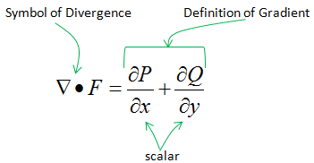
Now let's analyze each component of this mathematical equations. In following example, I cut a small section of a vector field and magnify it as shown on the right side. I just focused two vectors. First, make it sure that you understand the meaning of each of these lines (green lines and red lines) and vectors (blue arrows). Green line indicate the x component of the vectors and Red line indicates the y component of the vector.
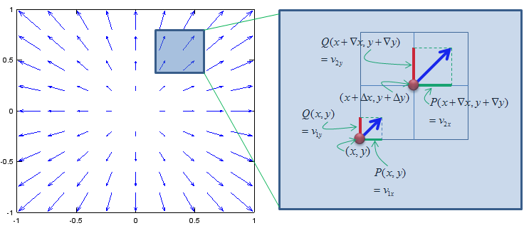
Now let's compare how much the x components of the two vectors (Green Lines) changed and how much the y components of the two vectors changed. Divergence is the sumation of these two changes (change in the x direction and change in the y direction). In other word, divergence is the 'net changes of the two vectors' as shown below.
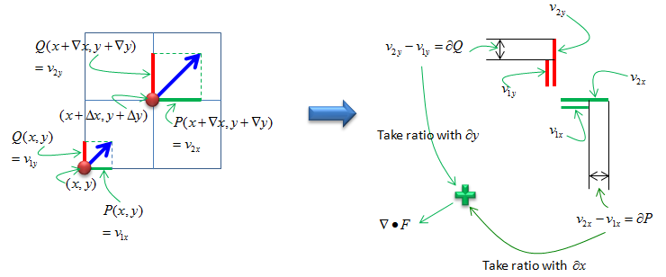
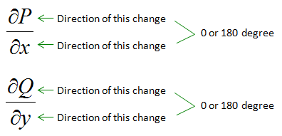
If the net change (Divergence) is plus value, you would see /feel that something is expanding from the observation point (in this example, the observation point is (x,y)). If the net change (Divergence) is minus(negative) value, you would see /feel that something is shriking into the observation point (in this example, the observation point is (x,y)). One confusing point is the case when 'Divergence(net change)' is 0. There are two case when divergence is 0. One is the case when there is no change at all, meaning no change in x direction, no change in y direction. This is obvious. You would not feel any changes at the observation point. However, there is another case where you will have 'Divergence 0' (0 Net change). It is the case when both x component of the vector and y component of the vector changes and the amount of the change is same, but the direction of change is opposite. For example, if the vector expanded 2 times in positive direction on x axis and expanded 2 times in negative direction on y axis, the net change (divergence) becomes 0.
Examples
< Example 1 >
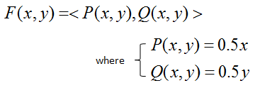
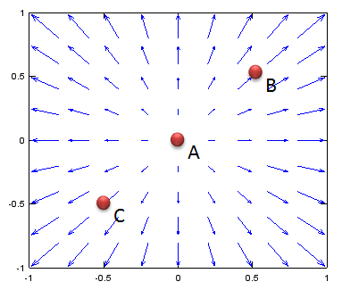
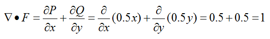
< Example 2 >
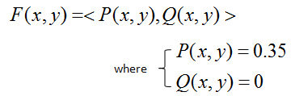
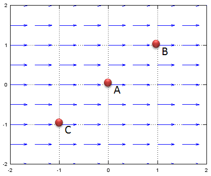
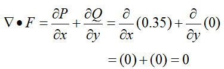
< Example 3 >
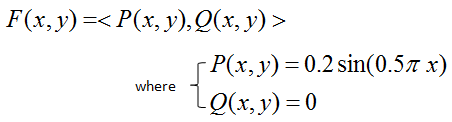
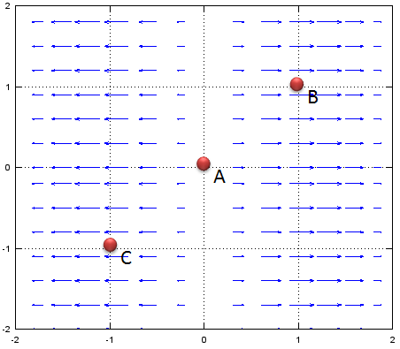
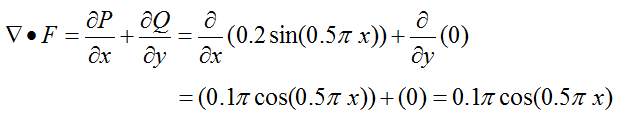
< Example 4 >
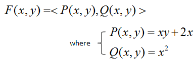
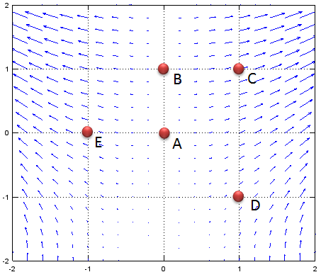
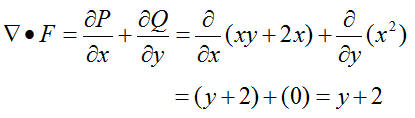
< Example 5 >
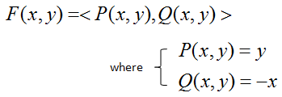
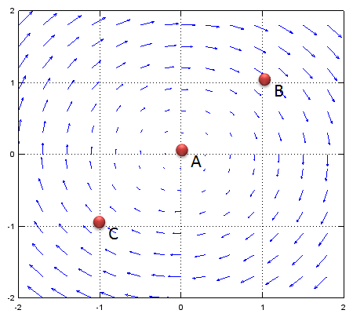
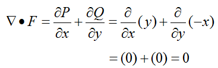
|
| ```` |